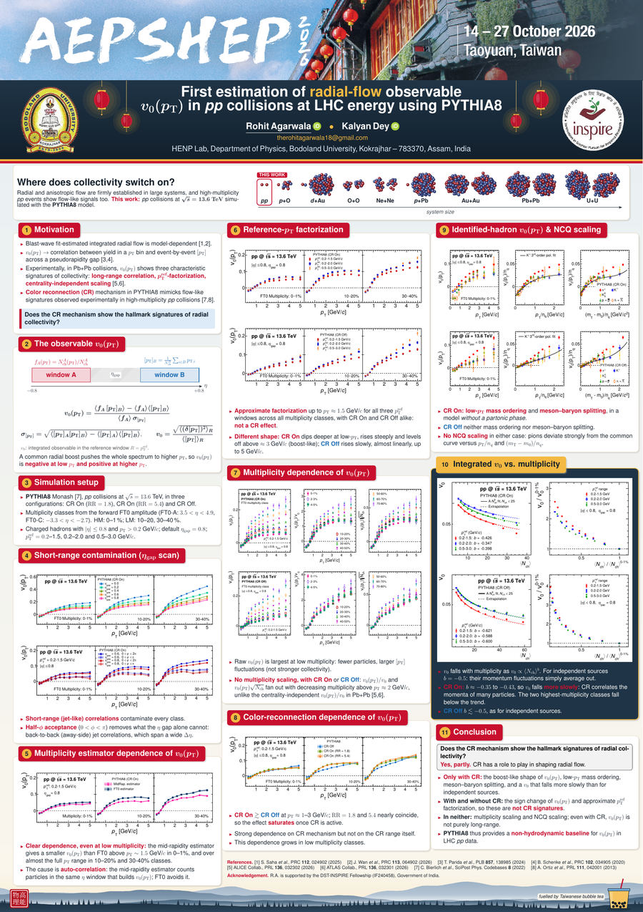
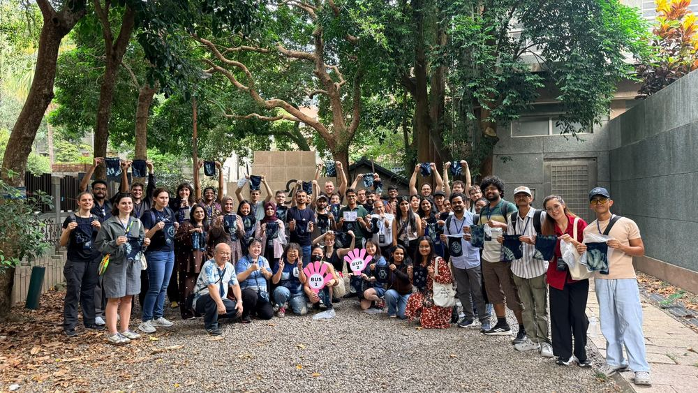
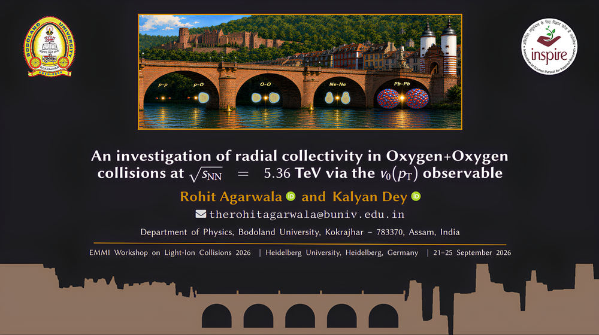

Frames from the road
Conferences, workshops and the places around them, mostly shot on my phone camera. Click any photo to see it full size.
14–27 October 2026, Taoyuan, Taiwan
Asia-Europe-Pacific School of High-Energy Physics 2026
AEPSHEP brings PhD students and young researchers from Asia, Europe and the Pacific together for two weeks of lectures from leading physicists. The seventh school in the series, organised by institutes in Taiwan, covered particle physics from field theory and QCD to neutrinos, flavour physics and detector instrumentation, with discussion sessions and a poster session for the students' own research.
My poster
First estimation of radial-flow observable v0(pT) in pp collisions at LHC energy using PYTHIA8
It asks whether color reconnection in PYTHIA8, a mechanism known to mimic flow-like signals, also produces the hallmark signatures of radial flow in pp collisions at √s = 13.6 TeV. My place at the school, including lodging and meals, was fully funded by its international sponsorship.



21–25 September 2026, Heidelberg, Germany
EMMI Workshop: Light-Ion Collisions 2026
The ExtreMe Matter Institute (EMMI) brought experimentalists and theorists to the Kirchhoff-Institut für Physik at Heidelberg University to take stock of the first light-ion collision results: proton–oxygen, oxygen–oxygen and neon–neon runs at the LHC, and oxygen–oxygen at RHIC. The week asked what these small systems reveal about the origins of collective behaviour, and what the case is for future ion runs at the LHC.
My talk
An investigation of radial collectivity in Oxygen+Oxygen collisions at √sNN = 5.36 TeV via the v0(pT) observable
The organisers supported my participation as an early-career researcher.
